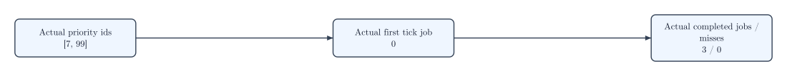
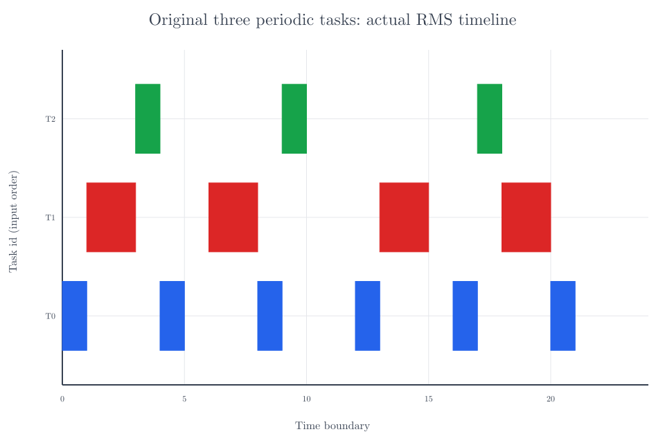
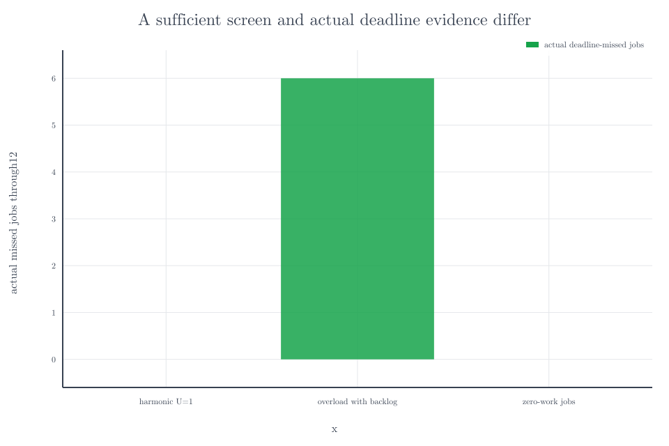
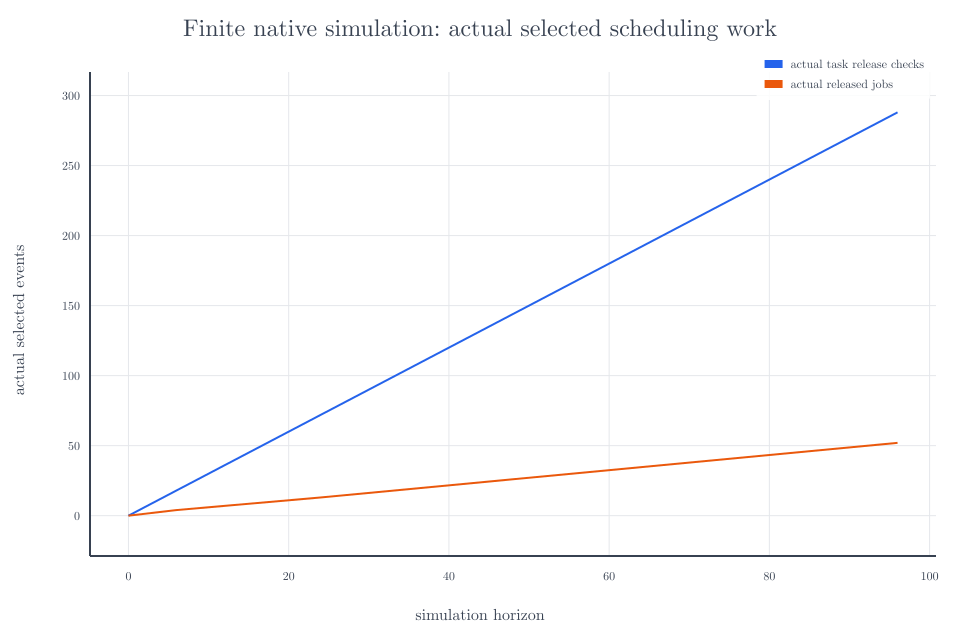

Rate-monotonic scheduling: actual periodic jobs, priorities and deadline evidence
Abstract
Periodic real-time tasks must complete every released job before its deadline. Rate-monotonic scheduling assigns higher fixed priority to shorter periods, while a utilization bound gives a sufficient schedulability screen. This report uses the already checked native job/tick producer and timeline plot, retains the original three tasks and heavier control, and distinguishes a failed sufficient test from an actual deadline miss.
Mechanism and mathematical scope
Assume a preemptive single processor, independent synchronous periodic tasks, execution cost C_i and relative deadline equal to period T_i. Rate-monotonic priorities order increasing T_i, with the native documented deterministic tie rules.
The bound follows from the worst-case fixed-priority task sets, not from a statement that higher-utilization sets always fail. Harmonic periods can schedule at utilization1. The simulator instead follows actual releases, remaining work, selected jobs and deadline boundaries. A job unfinished at its deadline is a miss even if it later completes; unfinished jobs are not dropped when the next period releases. Simulation over a finite horizon checks only deadlines through that horizon. It is evidence for that run, not a general proof for arbitrary offsets/deadlines/resource blocking.
A tiny actual producing history
The table and native concept diagram read the same producing execution. Every block below is a complete editable C++ program.
#include <dm/dm.hpp>
int main() {
namespace a = dm::algorithms;
namespace g = dm::graphics;
std::filesystem::create_directories("build");
const std::vector<a::RTTask> tasks{{7, 2, 1}, {99, 4, 1}};
auto t = a::rt_trace(tasks, 4, a::RTPolicy::rate_monotonic);
std::print("\n| actual job id | task id | release | deadline | executed | completion | missed |\n| ---: " "| ---: | ---: | ---: | ---: | ---: | --- |\n");
for (std::size_t i = 0; i < t.jobs.size(); ++i) {
const auto &j = t.jobs[i];
std::print("| {} | {} | {} | {} | {} | {} | {} |\n", i,
t.tasks[j.task_index].id, j.release, j.deadline, j.executed,
j.completion, j.missed);
}
g::Diagram d;
d.node("n0", {0, 0},
std::format("Actual priority ids\n{}",
a::rate_monotonic_priorities(tasks)));
d.node("n1", {10, 0},
std::format("Actual first tick job\n{}", t.tick_jobs[0]));
d.node("n2", {20, 0},
std::format("Actual completed jobs / misses\n{} / {}",
t.work.jobs_completed, t.work.deadline_misses));
d.edge("n0", "n1").edge("n1", "n2");
d.save_svg("build/rate_monotonic_tiny.svg");
}| actual job id | task id | release | deadline | executed | completion | missed |
|---|---|---|---|---|---|---|
| 0 | 7 | 0 | 2 | 1 | 1 | false |
| 1 | 99 | 0 | 4 | 1 | 2 | false |
| 2 | 7 | 2 | 4 | 1 | 3 | false |

The retained original experiment
#include <dm/dm.hpp>
int main() {
namespace a = dm::algorithms;
namespace g = dm::graphics;
std::filesystem::create_directories("build");
const std::vector<a::RTTask> tasks{{0, 4, 1}, {1, 6, 2}, {2, 8, 1}}, heavy{
{0, 4, 1}, {1, 6, 2}, {2, 8, 2}
};
auto t = a::rt_trace(tasks, 24, a::RTPolicy::rate_monotonic);
auto h = a::rt_trace(heavy, 24, a::RTPolicy::rate_monotonic);
std::print("\n| original task set | actual utilization | sufficient RMS screen | actual misses " "through24 |\n| --- | ---: | --- | ---: |\n| original | {} | {} | {} |\n| heavier | {} | {} " "| {} |\n",
a::rt_utilization(tasks), a::rate_monotonic_schedulable(tasks),
t.work.deadline_misses, a::rt_utilization(heavy),
a::rate_monotonic_schedulable(heavy), h.work.deadline_misses);
std::print("Actual priority task ids: {}. Original bound: {}. Heavier EDF finite misses: {}.\n",
a::rate_monotonic_priorities(tasks),
a::rate_monotonic_bound(tasks.size()),
a::rt_trace(heavy, 24, a::RTPolicy::earliest_deadline).work.deadline_misses);
auto p = a::plot_rt_schedule(tasks, t.schedule);
p.title("Original three periodic tasks: actual RMS timeline");
p.save_svg("build/rate_monotonic_original.svg");
}| original task set | actual utilization | sufficient RMS screen | actual misses through24 |
|---|---|---|---|
| original | 0.7083333333333333 | true | 0 |
| heavier | 0.8333333333333333 | false | 0 |
Actual priority task ids: [0, 1, 2]. Original bound: 0.7797631496846193. Heavier EDF finite misses: 0.

Explicit controls
#include <dm/dm.hpp>
int main() {
namespace a = dm::algorithms;
namespace g = dm::graphics;
std::filesystem::create_directories("build");
const std::vector<std::vector<a::RTTask>> cases{{{0, 2, 1}, {1, 4, 2}},
{{0, 2, 3}},
{{0, 3, 0}, {1, 5, 1}}};
std::vector<std::string> labels{"harmonic U=1", "overload with backlog",
"zero-work jobs"};
std::vector<double> misses;
std::print("\n| actual control, horizon12 | sufficient screen | actual releases | actual misses |\n| " "--- | --- | ---: | ---: |\n");
for (std::size_t i = 0; i < cases.size(); ++i) {
auto t = a::rt_trace(cases[i], 12, a::RTPolicy::rate_monotonic);
misses.push_back(t.work.deadline_misses);
std::print("| {} | {} | {} | {} |\n", labels[i],
a::rate_monotonic_schedulable(cases[i]),
t.work.jobs_released, t.work.deadline_misses);
}
auto p = g::RPlot::barplot(misses, labels, "actual deadline-missed jobs");
p.title("A sufficient screen and actual deadline evidence differ").y_label(
"actual missed jobs through12");
p.save_svg("build/rate_monotonic_controls.svg");
}| actual control, horizon12 | sufficient screen | actual releases | actual misses |
|---|---|---|---|
| harmonic U=1 | false | 9 | 0 |
| overload with backlog | false | 6 | 6 |
| zero-work jobs | true | 7 | 0 |

Actual selected work and sensitivity
#include <dm/dm.hpp>
int main() {
namespace a = dm::algorithms;
namespace g = dm::graphics;
std::filesystem::create_directories("build");
const std::vector<a::RTTask> tasks{{0, 4, 1}, {1, 6, 2}, {2, 8, 1}};
std::vector<double> x, y, z;
std::print("\n| horizon | actual ticks | actual release checks | actual released jobs | actual " "preemptions |\n| ---: | ---: | ---: | ---: | ---: |\n");
for (int horizon : {0, 6, 12, 24, 48, 96}) {
auto t =
a::rt_simulate_work(tasks, horizon, a::RTPolicy::rate_monotonic);
x.push_back(horizon);
y.push_back(t.work.release_checks);
z.push_back(t.work.jobs_released);
std::print("| {} | {} | {} | {} | {} |\n", horizon, t.work.ticks,
t.work.release_checks, t.work.jobs_released,
t.work.preemptions);
}
auto p = g::RPlot::create();
p.lines(x, y, "actual task release checks", {37, 99, 235}).lines(
x, z, "actual released jobs", {234, 88, 12}).title(
"Finite native simulation: actual selected scheduling work").x_label(
"simulation horizon").y_label("actual selected events");
p.save_svg("build/rate_monotonic_work.svg");
}| horizon | actual ticks | actual release checks | actual released jobs | actual preemptions |
|---|---|---|---|---|
| 0 | 0 | 0 | 0 | 0 |
| 6 | 6 | 18 | 4 | 0 |
| 12 | 12 | 36 | 7 | 0 |
| 24 | 24 | 72 | 13 | 0 |
| 48 | 48 | 144 | 26 | 0 |
| 96 | 96 | 288 | 52 | 0 |

API and interpretation
The original heavier task set is shown with its actual RMS and EDF outcomes instead of asserting failure from a failed bound screen. Sparse external task ids are labels, not array row positions. The existing canonical API validates every task, preserves overdue backlog and checks the boundary H. Its native plot maps task ids to input-order rows. This report reuses that producer rather than creating another scheduler or timeline renderer. Counters are selected simulation events, not response-time analysis or wall-clock overhead.
Reusable producers, fixtures and histories live in the canonical C++ library. Captured records own their values and do not come from a separate report replay. Selected counters and record/scalar policies are specified at their API boundaries; they are not peak-byte or wall-time budgets. Synthetic structural inputs are controlled fixtures for these mechanisms.
References
Verification: 214 scoped native cases;15 directly instrumented ASan/UBSan
cases;127 executable public examples;567/567 full-file definitions;10
hovers;1340 independent records/58514 checks;frozen compatibility across six
changed legacy families;independent NumPy tensor-training comparisons with
recorded tolerances;12 checkout/installed standalone headers and linked
consumer;41 executed programs and41 inspected figures with both exports.
Receipts: build/mepml-conversion/batch-314-323/.